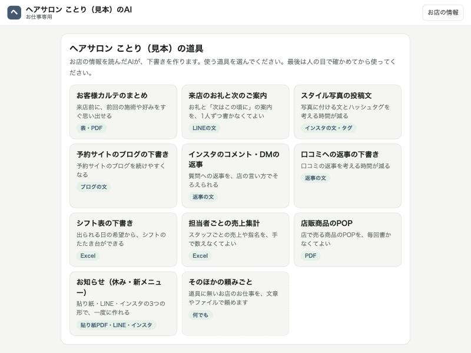
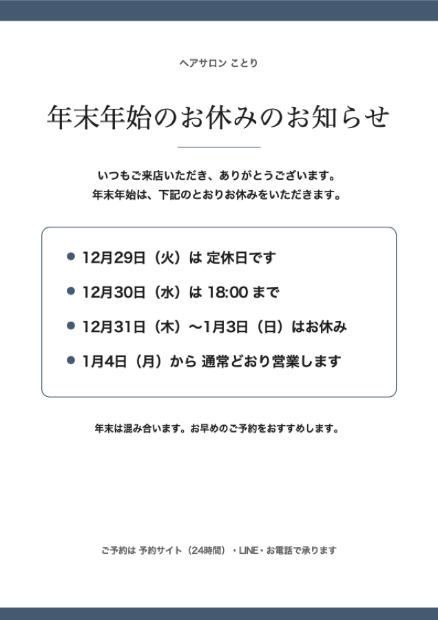
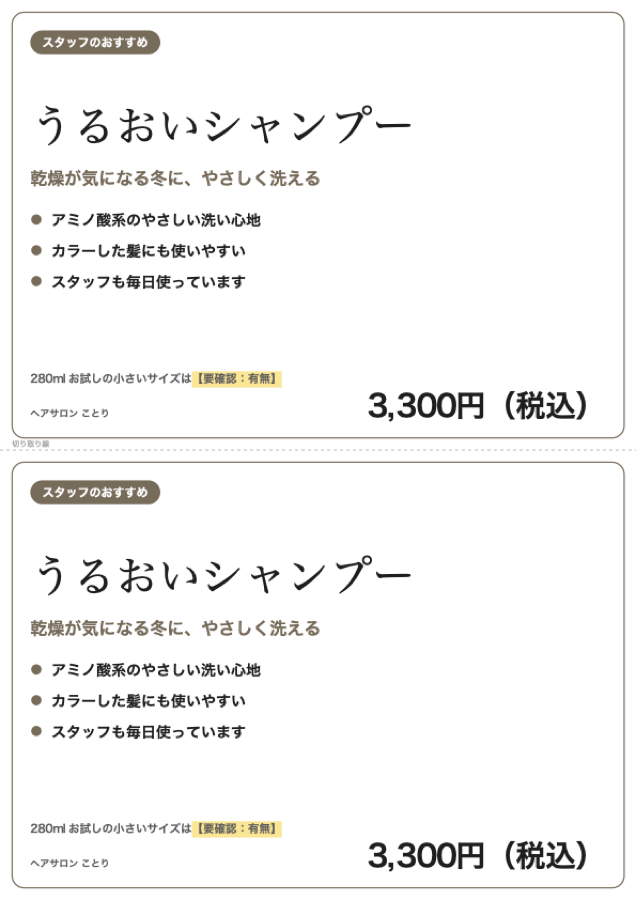

お店の仕事に合わせた、
AIの道具を10本。
美容室なら美容室の、工務店なら工務店の10本。メニューや料金、言葉づかいを一度入れておくと、口コミの返事もお知らせも、お店らしい下書きで返ってきます。
月額11,800円（税込）で10本ぜんぶ。いつでも解約できます。
LINEで業種と「楽にしたい作業」を伺い、使い方をご案内します。
こんな時間、ありませんか。
お客様のこと、お店のこと。本当は、そちらに時間を使いたいはずです。
閉店後の、書きもの
会議のメモをまとめる、お知らせを書く、取引先へのメールを考える。
返事を考える時間
口コミやお問い合わせに、ていねいに返したい。でも、言葉選びに時間がかかる。
表づくりと数え直し
シフト表を組む、売上や回数を集計する、月末に数え直す。
同じAIでも、お店の情報が入ると、答えが変わります。
道具の中身は、業種ごとに作ってあります。そこへ、お店の情報を入れるだけ。作り込みの手間はかかりません。
業種を選ぶ
お店の業種の10本が、そのまま並びます。
お店の情報を入れる
メニューと料金、休みの日、言葉づかい、スタッフ。見本を見ながら、書ける所だけで大丈夫です。
お店の言葉で返ってくる
料金や休みはお店の情報のとおり。書いていない事は作らず、【要確認】と印を付けて返します。



どれも、見本のお店（美容室・架空）の情報を入れて、そのまま作った物です。
LINEで相談して、その日から
LINEで友だち追加
下のボタンから。相談は無料です。
業種と作業を伺う
業種と、楽にしたい作業を教えてください。10本の使い方をお伝えします。
カードでお申し込み
月額11,800円（税込）。用意するのはクレジットカードだけです。お支払いのあと、ログインの合言葉をLINEでお送りします。
お店の情報を入れて、使う
メニュー表や料金表があれば、それを見ながら書き写すだけ。入れたら、すぐ使えます。
御社だけの書式や決まりで作る道具は、別のご契約です。30分の実演（無料・オンライン）で、動く見本をお見せしながら伺い、お見積りします（初期費用＋月額）。
解約はLINEで一言。最低契約期間も、違約金もありません。
- 選んだ業種の10本を、ぜんぶ使えます
- お店ごとに、月300回まで（残りは画面でいつでも確かめられます）
- AIの利用料は月額に含みます
- 次のお支払い日の前日までに解約すると、次の回からかかりません
- 割引や無料のお試しはありません
初期費用＋月額。30分の実演のあとにお見積りします。
お預かりしません
学習に使われません
7日で消えます
お店の方です
使うAIは、米国Anthropic社の「Claude」を会社向けの契約で使います。入力は通常30日以内に消え、会話の中身はコアシルのサーバーに残りません。くわしくは プライバシーポリシー をご覧ください。
よくあるご質問
パソコンが苦手でも使えますか？
スマホのブラウザで使えます。メモを貼る、写真を付ける、の2つが分かれば大丈夫です。分からない時は、LINEでいつでも聞いてください。
どんな業種でも使えますか？
今は22の業種に、それぞれ10本を用意しています。ここに無い業種の方は、LINEでご相談ください。近い業種の10本が合うことがあります。
ChatGPTなどと、何が違いますか？
お店の情報を一度入れておけば、毎回お店のことを説明し直さなくてよい所です。業種ごとに、何を渡せば何が返るかを決めてあるので、文を考えなくても使えます。貼り紙はPDF、シフト表や集計はExcelの形で、そのまま返ります。
「お店に合わせる」とは、どういうことですか？
メニューと料金、休みの日、言葉づかい、スタッフなどを、画面の「お店の情報」に入れておくことです。AIはそれを読んで下書きを作るので、料金や休みがお店のとおりになり、言葉づかいもお店らしくなります。あとから何度でも直せます。
使わない道具があっても、料金は同じですか？
はい、月額11,800円（税込）です。使わない道具は、画面に出さないようにもできます。
AIの答えは、そのまま使って大丈夫ですか？
AIが作るのは下書きです。金額・日付・お名前などは、最後に人の目で確かめてからお使いください。分からない所は【要確認】と印を付けて返します。
解約はどうすればいいですか？
LINEかお電話でお知らせください。最低契約期間や違約金はありません。次のお支払い日の前日までにお知らせいただくと、次の回から料金はかかりません。お支払い済みの期間の終わりまでは使えます。
無料で試せますか？
LINEでのご相談と、30分の実演（オンライン）は無料です。実演では、お店の業種の10本が動くところをお見せします。道具を使い始めるのは、お申し込みのあとからです。
まずは、LINEで気軽に
「うちの業種でも使える？」の一言で大丈夫です。10本の使い方をご案内します。
コアシル 代表 高橋陽人
はじめのご案内はAIがします。そのあとは、私がLINEでお返事します。
LINEを使わない方は、こちらのフォームからどうぞ。お返事はメールでお送りします。